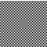
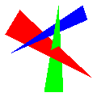
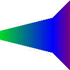
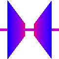
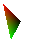

CS 418 Rasterizer
A collection of rasterization experiments for CS 418 at UIUC.
Run it
python program.py <input-file>
make run file=<input-file>Images





A collection of rasterization experiments for CS 418 at UIUC.
python program.py <input-file>
make run file=<input-file>



